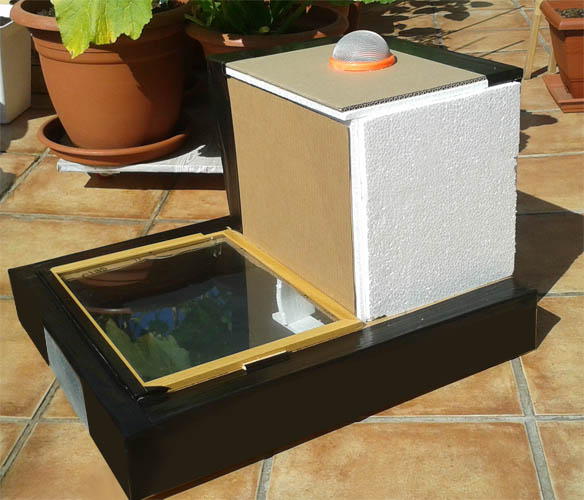
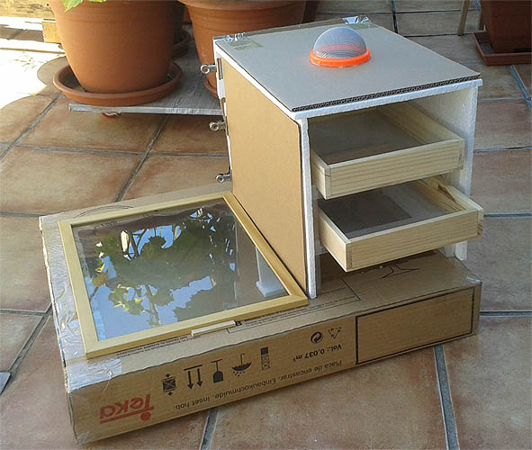

Latest News
- February 15, 2010
- Sed ut perspiciatis unde omnis iste natus error sit voluptatem accusantium.
- January 31, 2010
- Totam rem aperiam, eaque ipsa quae ab illo inventore veritatis et quasi architecto beatae.
- January 22, 2010
- Nemo enim ipsam voluptatem quia voluptas sit aspernatur aut odit aut fugitd quia.
LINKS
LINKS QUE UTILIZAMOS PARA EL DESHIDRATADOR HORTOFRUTÍCOLA.
-
¿QUE ES UN DESHIDRATADOR?

http://www.canunite.org/newsite/wp-content/uploads/2015/09/3_ModuleFoodSecurity.pdf http://www.falabella.com/static/site/content/infoComplementaria/descargableProductos/deshidratador.pdf
-
¿QUE ES Y COMO FUNCIONA UN DESHIDRATADOR?

http://www.gatoo.es/manuales_gatoo/www.Gatoo.es__excalibur_deshidratador_profesional_3900tm.pdf
-
DISEÑO Y CONSTRUCIÓN DE UN DESHIDRATADOR

http://www.feriadelasciencias.unam.mx/anteriores/feria22/feria327_01_diseno_y_construccion_de_un_secador_solar_de_fruta.pdf http://www.falabella.com/static/site/content/infoComplementaria/descargableProductos/deshidratador.pdf